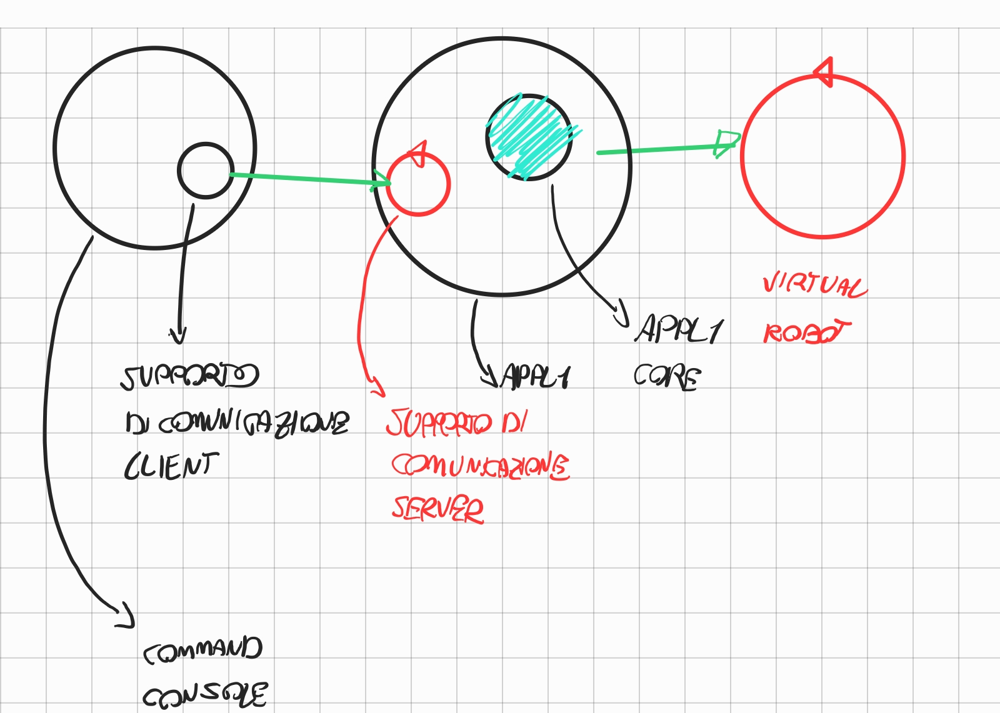

LABORATORIO DI INGEGNERIA DEI SISTEMI SOFTWARE
Introduction
Requirements
Requirement analysis
Problem analysis
COMMAND CONSOLE REMOTA
la command console per come viene concepita nello step 2 non è riusabile in ambiente remoto in quanto:
-
la console deve comunicare delle informazioni via rete, non è piu possibile effettuare una procedure call
-
la command console deve essere indipendente dal protocollo di comunicazione utilizzato
ADAPTER APPL1
-
per evitare di reimplementare la logica applicativa si decide di inglobare il POJO appl1Core in un adapter in grado di ricevere comandi dalla command console
-
l'adapter deve essere indipendente dal protocollo di comunicazione utilizzato
SUPPORTO DI COMUNICAZIONE
-
necessario sviluppare un astrazione al supporto di comunicazione
-
sia per la command console che per appl1 si può sfruttare il pattern strategy per il supporto di comunicazione

funzionalità necessarie per il supporto di comunicazione lato client
-
sendCommand(String cmd)
-
connectToServer(String address)
interfaccia per il supporto di comunicazione lato server
-
il supporto deve comunicare con il componente appl1 quando riceve un nuovo comando da parte della Command console
-
il supporto di comunicazione diventa un oggetto osservabile e notifica Appl1 nel momento in cui riceve un messaggio
CONFIGURAZIONE DEL SUPPORTO DI COMNUNICAZIONE MEDIANTE FILE
-
si può utilizzare il pattern factory per fornire al Componente Appl1 l'implementazione del supporto di comunicaizione desiderata
-
la classe factory che si occupa di istanziare il supporto di comunicaizione puo determinarlo leggendo da un file
ARCHITETTURA LOGICA

LINGUAGGIO DI COMUNICAZIONE
-
i componenti comunicano mediante stringhe in formato JSON
-
{command:CMD}
-
{CMD=start|stop|resume}
PIANO DI LAVORO
command console
-
sviluppo interfaccia supporto di comunicazione client
-
sviluppo di implementazione pilota su protocollo di esempio (HTTP)
-
sviluppo di factory per interfaccia di comunicazione client
-
sviluppo di classe di integrazione per la comunicazione della command console
componente appl1
-
sviluppo interfaccia per supporto di comunicazione server
-
sviluppo di implementazione pilota su protocollo di esempio (HTTP)
-
sviluppo di factory per interfaccia di comunicazione server
le due fasi di sviluppo possono essere eseguite in parallelo da team indipendenti che hanno come vincolo il linguaggio definito in precedenza
COMUNICAZIONE TRAMITE WS
-
la ricezione dei messaggi inviati dal robot tramite ws prevede una semantica asincrona
-
la logica applicativa è pensata per interagire con il robot tramite chiamate sincrone
-
per riutilizzare la classe che implementa la funzionalità applicativa si puo predisporre un wrapper che trasforma la semantica asincrona in semantica sincrona
-
si puo predisporre una classe che mascheri l'asincronicità del supporto di comunicazione utilizzato rendendo le comunicazioni con il robot bloccanti fino alla ricezione di un messaggio di stato
Test plans
Project
Testing
Deployment
Maintenance
By Matteo Longhi email: matteo.longhi5@studio.unibo.it,
GIT repo: https://github.com/carnivuth/iss_2023_matteo_longhi.git